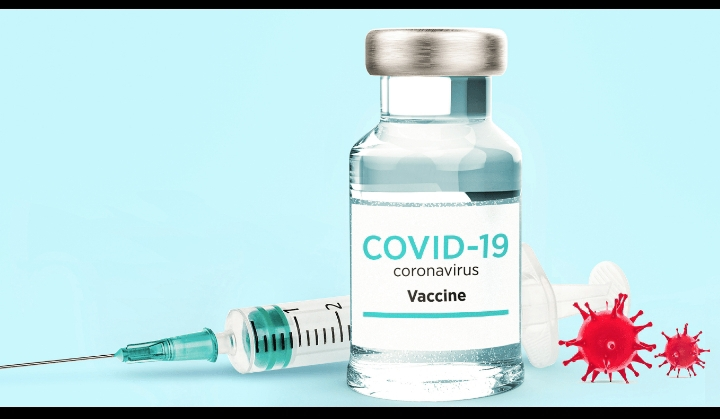

Wonderful news, right? wonderful news, right?
Get the answer from an infectious disease specialist.
We're heard it all since the pandemic started-lemon Juice can kill the coronavirus, masks don't work, if you already had COVID-19 you can't get it again or that the vaccines approved for emergency use will change your DNA or put a tracking device in your body.
Send Us Email
It's almost like we need a strong dose of something to knock out all of the misinformation. But despite all the myths and urban legend, about half of the U.S. population is fully vaccinated.
Wonderful news, right? wonderful news, right?
well, not to some vaccinated people are up against a new set of myths-they literally magnetic or they are going to shed vaccine. So what do vaccinated people need to do to stay safe? And it is still possible for them to speard COVID-19 to others? infectious disease
Copyright @ 2022 Health Essentials. All Right Reserved.
As restrictions and mask mandates are dropped around the country, people who are fully vaccinated might be feeling the return-to-normal fantasy. But Dr. Cardona warns that now still isn't the time to let your guard down. while the vaccine are potent, there still a chance that you could become infected.
Dr. Cardona explains.
"Fully vaccinated" means that you completed a COVID-19 vaccine series as recommended for the best protection against severe complications such as hospitalizations and/or death. No vaccine offers 100% protection against illness, yet it does give you better chance to fight off the infectious consequences of being exposed to the SARS-COV-2 Virus."
While it is possible, Dr. Cardona says that the ability to transmit COVID-19 may occur at a lower rate. She adds that this could also be a reality for people who don't have a good immune response to vaccines.
"The elderly, those with immune or chronic health conditions or those with underlying health disorders may not have the best protective response to vaccines, such as the COVID-19 vaccine. We are still collecting data and doing ongoing research about the vaccine responses in these vulnerable population.
| Questions | Frequency (%) | SD | |||||
|---|---|---|---|---|---|---|---|
| Will you apply face mask? | 10(2.4) | 47(11.4) | 18(4.4) | 239(57.9) | 99(24.0) | 3.90 | 0.974 |
| Will you mentain physical distancing? | 19(4.6) | 61(14.8) | 25(6.1) | 222(53.8) | 86(20.0) | 3.71 | 1.093 |
| Will you wash your hands? | 15(3.6) | 33(8.0) | 11(2.7) | 237(57.4) | 117(28.3) | 3.99 | 0.979 |
| Will you use hand sanitizer? | 43(10.4) | 69(16.7) | 60(14.5) | 172(41.6) | 69(16.8) | 3.38 | 1.237 |
| Will you stay home? | 35(8.5) | 86(20.8) | 65(13.7) | 205(49.6) | 22(5.3) | 3.23 | 1.099 |
| Will you quarantine yourself? | 13(3.1) | 26(6.3) | 11(2.7) | 287(69.5) | 76(18.4) | 3.94 | 0.862 |
| Overall intention of patients to carry out COVID-19 prevention method | Category | Frequency (%) | |||||
Copyright @ 2022 Health Essentials. All Right Reserved.
Copyright @ 2022 Health Essentials . All Right Reserved.